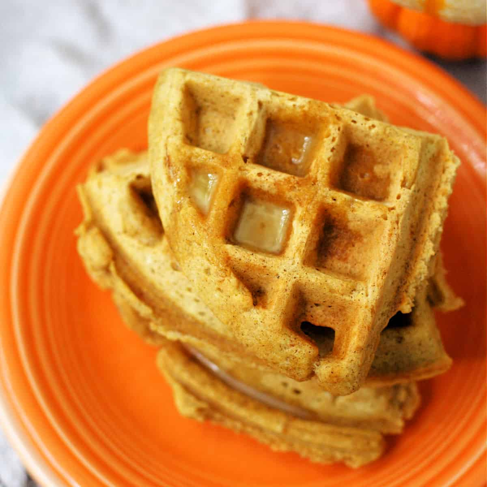

Vegan Pumpkin Waffles

Quick, easy and delicious vegan pumpkin waffles
Everyone will love these delicious and simple pumpkin waffles so much that
they won't even know they're vegan!
These waffles are made with ingredients such as pumpkin puree, your favorite
plant milk, and nutmeg. Top with your favorite choice of toppings like syrup,
powdered sugar, or fruit!
ingredients
- 1 cup almond milk
- 1/2 cup pumpkin puree
- 2 tablespoons white sugar
- 2 tablespoons canola oil
- 1 teaspoon vanilla extract
- 1 cup all-purpose flour
- 2 teaspoons pumpkin pie spice
- 1 teaspoon baking powder
- 1/4 teaspoon salt
- 1/4 teaspoon baking soda
- 1 pinch ground nutmeg
Steps
- Combine almond milk, pumpkin puree, sugar, oil, and vanilla extract in a
bowl. Add flour, pumpkin pie spice, baking powder, salt, baking soda, and
nutmeg. Stir until well combined.
- Preheat a 4-inch mini waffle iron according to manufacturer's instructions.
Pour in about 2 tablespoons batter per waffle and cook until golden brown,
about 5 minutes.